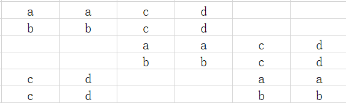
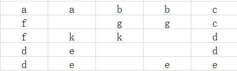
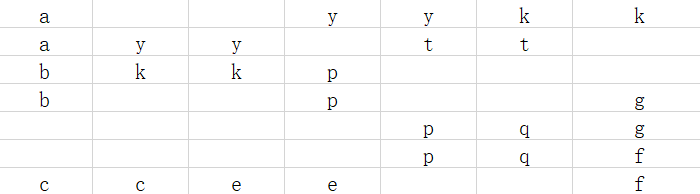
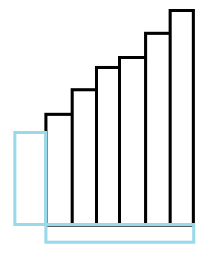

AGC041 赛后总结
比赛链接：https://atcoder.jp/contests/agc041
A. Table Tennis Training
题目链接：https://atcoder.jp/contests/agc041/tasks/agc041_a
题目大意：有 $n$ 场比赛，每次比完，$i$ 的胜者去 $i-1$ ，败者去 $i+1$ ，$1$ 的胜者和 $n$ 的败者不动，问 $A$ 和 $B$ 赛场的两个人相遇需要至少多少次比赛。
我的做法
注意到，能改变奇偶性的只有 $1,n$ 赛场。
所以讨论一下就行了。
如果奇偶性相同就直接相遇，否则去一次 $1$ 或者 $n$ 改一下就行了。
时间复杂度：$O(1)$ 。
1 |
|
B. Voting Judges
题目链接：https://atcoder.jp/contests/agc041/tasks/agc041_b
题目大意：有 $n$ 道题目，有 $m$ 个裁判选择恰好 $V$ 个题目投票，然后每道题目基础有 $a_i$ 票，得票数最高的 $P$ 道题目会入选比赛，问每道题目有没有机会入选。
我的做法
先从大到小排序。
如果我们想要让 $a_{i}$ 有可能能成为前 $P$ 个，贪心来看，投给 $a_{i}$ 优先级最高，其次是前 $P-1$ 个和 $\le a_i$ 的题目，最后才是介于 $P$ 名和 $>a_i$ 的题目。
别人加等于我减，所以可以看成对这些题目的减法，因此问题能够转换成问 $[P,i-1]$ 区间中的数字，有 $m$ 次操作能够选择若干数字 $-1$ ，问能不能全部 $\le a_i$ 。（不难证明这是充要条件）
然后就做完了。
时间复杂度：$O(n\log{n})$ 。
1 |
|
C. Domino Quality
题目链接：https://atcoder.jp/contests/agc041/tasks/agc041_c
题目大意：可以放一些 $12$ 的方块在矩阵里面，要求每一行每一列涉及的 $12$ 的方块数一样而且不为 $0$ 。
我的做法
首先 $\le 2$ 是无解的。
$\ge 3$ 时呢？
一个想法是发现我们可以像矩阵那样，分成左上角和右下角，所以可以把 $n$ 写成 $n_1+n_2+…$ 的形式，只要每一部分中每行每列的涉及的方块数一样就行。
首先可以构造出偶数时每行每列为 $3$ 的情况：

还有 $5$ 时的情况：

$7$ 的情况：

然后就做完了。
1 |
|
D. Problem Scores
题目链接：https://atcoder.jp/contests/agc041/tasks/agc041_d
题目大意：问有多少个数组满足非递降且任意 $k+1$ 个数字之和 $>$ $k$ 个数字之和。
我的做法
很有感觉的一道题目，每个地方设置的刚刚好。
首先注意到一个事情，这个条件可以的等价的写成：$k=\left \lceil \frac{n-1}{2} \right \rceil$ ，前 $k+1$ 个数字之和要 $>$ 后 $k$ 个数字之和。
不妨以第 $k+1$ 个数字为中心，这么写：前第 $k$ 个数字和后第 $k$ 个数字的差值 + 前第 $k-1$ 个数字和后第 $k-1$ 个数字的差值 … + 第 $k+1$ 个数字。
可以把整个过程想象成在 $k+1$ 这个位置左边放一个数字，右边放一个数字。
但是这样子想，怎么设 $dp$ 都会带上一个十分讨厌的 $\log$ ，这个 $\log$ ，于是想到一个经典问题，摆阶梯。
如果竖着 $dp$ ，就避不开这个 $\log$ ，但是如果横着 $dp$ ，就可以避免这个 $\log$ 。

再联系到这道题目就可以得到最终的做法：
dp[i][r] 表示放置了 $i$ 个数字后最右边的数字处在 $r$ 而且这 $i$ 的数字的权值和为 $0$ 。
然后每次会在中心的数字上面放一个左边的数字和右边的数字，然后可以把左边的数字往左边推一格，右边同理，同时，在推完后把中心位置调到使权值和恰好为 $0$ 的位置。
可以发现，对于任意一个个数 $\ge 3$ 的方案，只要权值和为 $0$ ，就一定不会有数字 $\le 0$ 。
所以不用容斥就可以计算出最终答案。
时间复杂度：$O(n^2)$ 。
1 |
|
E. Balancing Network
题目链接：https://atcoder.jp/contests/agc041/tasks/agc041_e
题目大意：给你 $n$ 条横着的电线，然后从左到右有若干条通道，每条通道连接两根电线，然后你需要给每条通道指定向上或者向下的方向，使其满足：
当 $T=1$ 时，要求任何一根电线左端出发最终能到达一根电线上。
当 $T=2$ 时，要求不会都到一根电线上。
如果不存在输出无解。
我的做法
分类讨论真的是。
当你想着这个问题足够久或者手动的模拟过一会后，你会感到一种熟悉的感觉从脑袋中流淌。 没错，它就是可达性统计。 这个部分分神似可达性统计。 所以你可能会想，我能不能设 $dp[x]$ 表示前 $i$ 条边能到达 $x$ 的集合，然后当存在边 $(x,y)$ 时。 就更新：$dp[x]=dp[y]=dp[x]|dp[y]$ ？ 这为什么是对的？ 归纳证明，我们先认为 $\exists$ 一种局面使得前 $i$ 条边过后 $dp[x]$ 中的电线都能到达 $x$ 这条电线，其中设 $E_x$ 表示与 $dp[x]$ 有关的边，即从 $dp[x]$ 回溯回去，任何和产生 $dp[x]$ 有关的边。 而 $dp[x],E_x$ 显然可以通过从 $x$ 的当前位置倒着 BFS 回去得到。 从而可以得到这么一个结论：无论任何局面，$dp[x]$ 外的点都不会经过 $E_x$ 中的边，也不会到达 $x$ 。 而在 $E_x$ 固定正确的方向后， $E_x$ 外的边满足更改方向不会影响 $dp[x]$ 中的点到达 $x$ ，换句话说，$E_x$ 外的边不会影响最终到达电线 $x$ 的集合，且该集合就等于 $dp[x]$ 。 然后当出现边 $(x,y)$ 时，显然 $x,y$ 外的点不受影响，关键是 $x,y$ 。 不妨只证明新的 $dp[x]$ 仍然满足要求。 构造一种新的局面：$E_x$ 的边方向照旧，$E_y\setminus E_x$ 的边方向同样照旧，其余随意。 首先知道 $dp[x]$ 一定能到达 $x$ ，然后是 $dp[y]\setminus dp[x]$ ，对于 $z\in dp[y]\setminus dp[x]$ ，$z$ 到 $y$ 的路径只会在 $E_y\setminus E_x$ 中，而不会有 $E_x$ ，否则 $z\in dp[x]$ ，所以 $z$ 能到达 $y$ ，然后走到 $x$ 。对于 $dp[x],dp[y]$ 之外的点，根据上面的性质，在去掉 $(x,y)$ 时，其永远到不了 $x,y$ ，加上显然也到不了，因此这种局面下到达 $x$ 的集合就是 $dp[x]\cup dp[y]$ 。 证毕。 那么为什么是最优解呢？ 可以注意到 $dp[x]$ 可以由 $x$ 倒着 BFS 得到，因此如果 $y$ 存在一种局面可以到达 $x$ ，根据路径可逆，$x$ 一定能倒着 BFS 到 $y$ ，因此所有局面中到达 $x$ 的集合一定是 $dp[x]$ 的子集。 从而得到 $dp[x]$ 就是最优集合，证毕。 综上，该 $dp$ 正确，证毕。 然后在跑完 $dp$ 后得到谁可以是那个汇聚万物的电线，最后直接倒着 $BFS$ 回去还原一下方案就行了，时间复杂度：$O(\frac{nm}{w})$ 。 首先 $n\le 2$ 的时候一定无解。 当 $n>2$ 时，我们考虑为什么 $n=2$ 时无解，是不是我们能够知道一开始 $(1,2)$ 是两个合法终点，但是如果存在一条边给他们两个连起来，就寄了。 但是如果我们能够存储两对不一样的合法终点呢？这样每次连至多终结其中一个，而另外一个手动模拟一下就知道，可以重新生成两对不一样的合法终点，然后就做完了。 时间复杂度：$O(n)$ 。$T = 1$
证明
$T = 2$
1
2
3
4
5
6
7
8
9
10
11
12
13
14
15
16
17
18
19
20
21
22
23
24
25
26
27
28
29
30
31
32
33
34
35
36
37
38
39
40
41
42
43
44
45
46
47
48
49
50
51
52
53
54
55
56
57
58
59
60
61
62
63
64
65
66
67
68
69
70
71
72
73
74
75
76
77
78
79
80
81
82
83
84
85
86
87
88
89
90
91
92
93
94
95
96
97
98
99
100
101
102
103
104
105
106
107
108
109
110
111
112
113
114
115
116
using namespace std;
typedef pair<int, int> PII;
const int N = 5e4 + 5;
const int M = 1e5 + 5;
int n, m, T;
namespace Solve1{
PII e[M];
bitset<N> f[N];
char st[M];
bool v[N];
void solve(){
for(int i = 1; i <= n; i++) f[i][i] = 1;
for(int i = 1; i <= m; i++){
auto& [x, y] = e[i];
cin >> x >> y;
f[x] |= f[y];
f[y] |= f[x];
}
int ans = 0;
for(int i = 1; i <= n; i++){
if(f[i].count() == n){
ans = i;
break;
}
}
if(!ans){
cout << "-1\n";
return ;
}
v[ans] = 1;
for(int i = m; i >= 1; i--){
auto [x, y] = e[i];
if(!v[x] && !v[y]) st[i] = '^';
else if(!v[x] && v[y]){
st[i] = 'v';
v[x] = 1;
}
else if(v[x] && !v[y]){
st[i] = '^';
v[y] = 1;
}
else st[i] = 'v';
}
cout << st + 1 << "\n";
}
}
namespace Solve2{
struct node{
int x, y;
string type;
}p1, p2;
string ans;
int pd(int x, const node &y){
if(x == y.x) return 1;
else if(x == y.y) return 2;
return 0;
}
int getp(int x, int y, const node &z){return (int) (pd(x, z) > 0) + (int) (pd(y, z) > 0);}
void cl(node &x){
node y = {0, 0, ""};
swap(x, y);
}
void solve(){
if(n == 2){
cout << "-1\n";
return ;
}
p1 = {1, 2, ""};
p2 = {1, 3, ""};
for(int i = 1; i <= m; i++){
int x, y;
cin >> x >> y;
node now;
if(getp(x, y, p1) == 1 || getp(x, y, p2) == 1){
if(getp(x, y, p1) == 1){
ans += p1.type;
now = {p1.x, p1.y, ""};
}
else{
ans += p2.type;
now = {p2.x, p2.y, ""};
}
cl(p1); cl(p2);
if(pd(x, now) == 1){
p2 = {x, now.y, "^"};
p1 = {min(now.y, y), max(now.y, y), "v"};
}
else if(pd(x, now) == 2){
p1 = {now.x, now.y, "^"};
p2 = {now.x, y, "v"};
}
else if(pd(y, now) == 1){
p1 = {x, now.y, "^"};
p2 = {now.x, now.y, "v"};
}
else if(pd(y, now) == 2){
p1 = {min(now.x, x), max(now.x, x), "^"};
p2 = {now.x, now.y, "v"};
}
}
else{
p1.type += "^";
p2.type += "^";
}
}
ans += p1.type;
cout << ans << "\n";
}
}
int main(){
cin >> n >> m >> T;
if(T == 1) Solve1::solve();
else Solve2::solve();
return 0;
}
好屎的分类讨论，能在考场写出来的人真是神仙吧。
update ：$T=1$ 的证明写了这么久，其实我都忽略了一个最关键的东西：$dp[x]$ 就是由 $x$ 倒着 BFS 得到的终点集合，我只需要构造出一种局面使得 $dp[x]$ 能全部到达 $x$ ，再说明一下最优性，就可以直接把问题转换成求 $x$ 倒着 BFS 能到达的集合，这样就可以很轻松的证明这个做法的正确性了，根本不用搞得那么繁琐。
而构造一种局面使得 $dp[x]$ 能全部到达 $x$ 是简单的，倒着考虑就行了。
其他题解
- $T=1$ 的做法和我的做法一样，但证明比我的证明更加简单，已经更新到我的做法最后的 update 部分。
同样做复杂了，我们设 $ed_x$ 表示第 $x$ 条线最后到哪条线，设 $cnt_i$ 表示 $ed_x=i$ 的 $x$ 的个数，倒着跑，注意到每次添加 $(x,y)$ 后，定向只会导致两个 $cnt$ 加减一，因此在 $n>2$ 的情况下，一定存在一种定向，使得不存在 $i$ 满足 $cnt_i=n$ 。
这种做法相较于我的做法没有繁杂的讨论，非常的好写。
这种讨论题难就难在想出好写的做法，反正我没想出来，投降 ┗( T﹏T )┛ 。